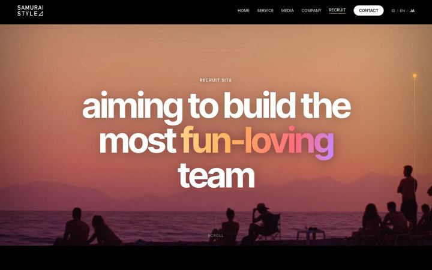
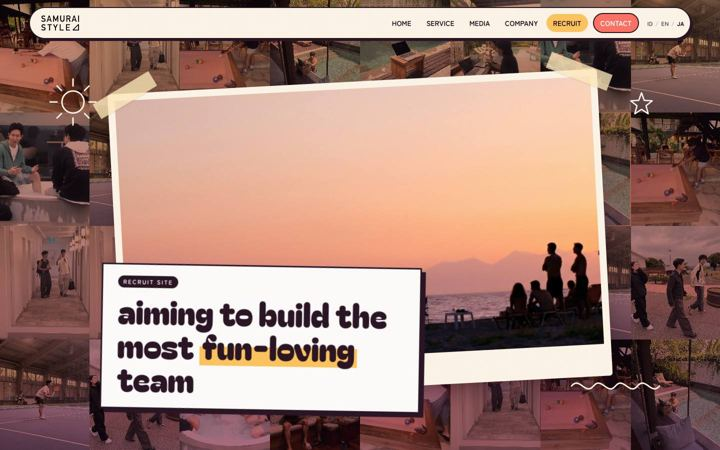
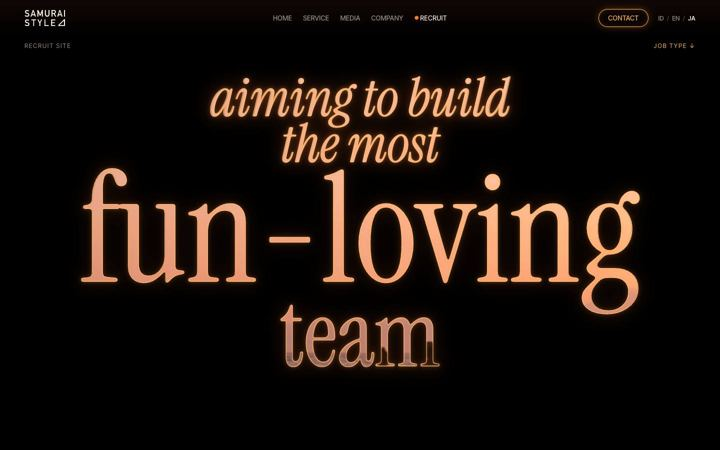

動画を画面いっぱいに固定し続け、その上に節を字幕のように重ねる。スクロールに合わせて場面の写真・動画の区間（夕日の浜→海）が切り替わり、全体の色が夕方のオレンジから夜の紺へ進み、後半は星が出る。右端の小さな太陽が下へ沈んで月になる。写真と文の左右交互は一切なし、全節が中央の一本道。

参考にしたサイト
- Careers at Apple 画面いっぱいの暗く落とした写真の上に、中央寄せで「小さな見出しの上の一行→グラデーションで塗った大見出し→本文→白い丸ボタン」を重ねる場面の積み方。引用文が灰色から白へ点灯していく読ませ方を、本文の文節ごとの点灯に写した
写真が主役のスクラップ帳。FVはチーム写真のモザイクの上に、傾けて貼った動画のポラロイドと、枠付きの箱に入った見出し。以下、罫線ノート・手紙・付箋・チェックリスト・チケットに本文を書き、写真はテープで貼って散らす（PCではつまんで動かせる）。地は夕焼けのオレンジから夜の紫へ流れる。

参考にしたサイト
黒に近い焦げ茶の夜に、大きなセリフ体の文字が主役のポスター。FVは「fun-loving」の文字の中で夕日の動画が流れ、ネオン管のように縁が光る。スクロールで文字の中へ入り、動画が全面に開く。以下は灯り色の大きな語が流れる帯（写真の粒とランタン・炎・月の線画入り）と、細い罫線の表で本文を読ませる。火の粉がゆっくり上る。

参考にしたサイト
- Locomotive Careers 価値観ごとに中央の「(1)」→画面幅を流れる特大のセリフ体の語（間に小さな写真の粒と記号）→「01｜名前｜説明」の3列の行、という繰り返しを+VALUE・CORE VALUEに。大きな段落の途中に写真の粒をはさむ書き方を「私たちは」に。末尾の募集職種を細い罫線で区切った特大文字の行で並べる作りを、MEMBER（役職｜名前｜顔｜経歴）・求める人間像・JOB TYPEに写した
- basement.studio People 黒地のフッターで画面幅いっぱいに置いた特大の一語（BSMNT.26）。フッターの光る CONTACT → に写した